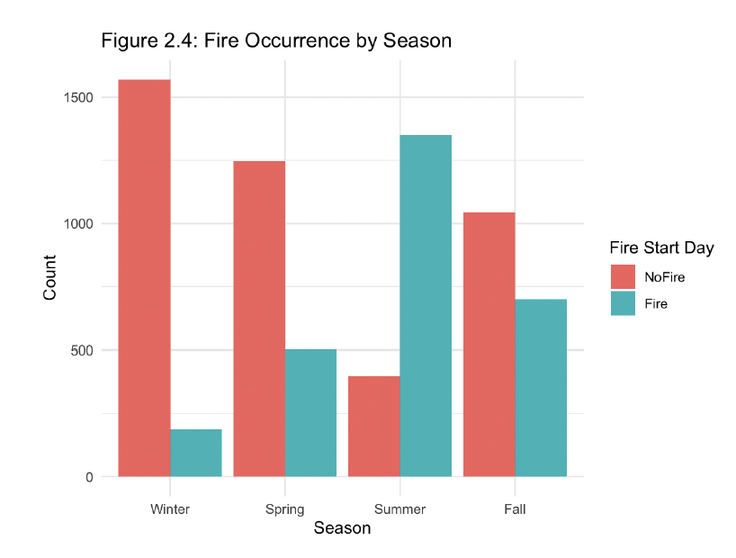
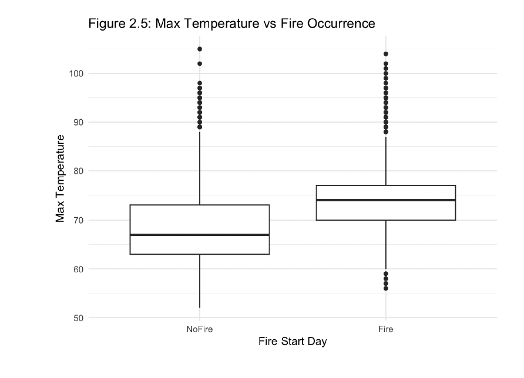
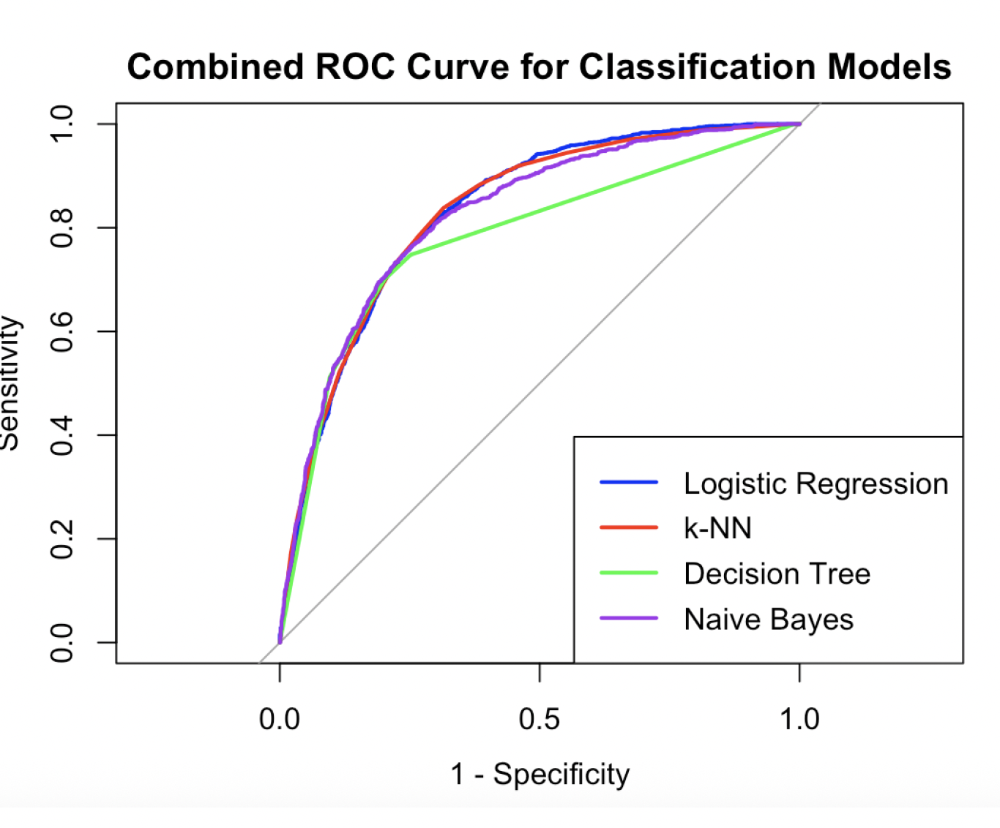

Case study · Data & Machine Learning
California Wildfire Prediction Using Machine Learning
Developed a machine learning solution to predict wildfire occurrence in California using historical weather and environmental data. The project explored how temperature, precipitation, wind conditions, and seasonal trends influence wildfire risk and compared multiple classification models to identify the most effective prediction approach.
What I did
- Cleaned and prepared datasets for analysis
- Performed exploratory data analysis (EDA)
- Engineered predictive features
- Built and evaluated machine learning models
- Compared model performance using ROC/AUC metrics
- Presented findings and recommendations
Tools & technologies
Key insights

Seasonal Wildfire Trends
Wildfire activity was substantially higher during summer months than in other seasons. This observation suggested that seasonality was a critical predictor and should be incorporated into predictive models.

Temperature’s Impact
Exploratory analysis revealed that wildfire events were associated with higher temperatures, indicating temperature as one of the strongest predictive variables in the dataset.

Model Performance
Multiple classification models were evaluated using ROC/AUC metrics. Several approaches effectively predicted wildfire occurrence while offering different trade-offs between performance and interpretability.
Project outcomes
- Analyzed approximately 7,000 observations
- Built and evaluated 4 machine learning models
- Identified temperature, precipitation, wind speed, and seasonality as key indicators
- Achieved strong predictive performance across all tested models
- Generated actionable insights for wildfire risk assessment
The challenge
One challenge was balancing model performance with interpretability. While some models provided marginally better predictive accuracy, others made it easier to understand which environmental factors contributed most strongly to wildfire occurrence. Evaluating these trade-offs was an important part of the analysis.
What I learned
This project strengthened my skills in data cleaning, exploratory analysis, predictive modeling, and performance evaluation. It also reinforced the importance of combining statistical analysis with effective data storytelling for non-technical audiences.